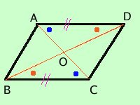
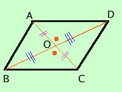

|
In un parallelogramma le diagonali si tagliano a meta' e viceversa Se in un quadrilatero le diagonali si tagliano a meta' allora il quadrilatero e' un parallelogramma Dimostriamo prima il teorema diretto e poi il teorema inverso teorema diretto
Dimostrazione traccio le diagonali AC e BD e considero i due triangoli AOD e BOC; essi hanno: 
teorema inverso
Dimostrazione  considero i triangoli AOD e BOC, essi hanno
I due triangoli AOD e BOC sono congruenti per il primo criterio e quindi hanno congruenti tutti gli elementi; in particolare: essendo l'angolo ODA^ congruente all'angolo OCB^ ed essendo questi angoli alterni interni rispetto alle rette AD e BC tagliate dalla trasversale BD allora le due rette AD e BC saranno parallele Basta ora considerare i triangoli AOB e COD e ripetere lo stesso ragionamento per dimostrare il parallelismo fra le rette AB e CD come volevamo Avendo dimostrato sia il teorema diretto che quello inverso i due fatti, parallelogramma e lati opposti congruenti, saranno equivalenti |